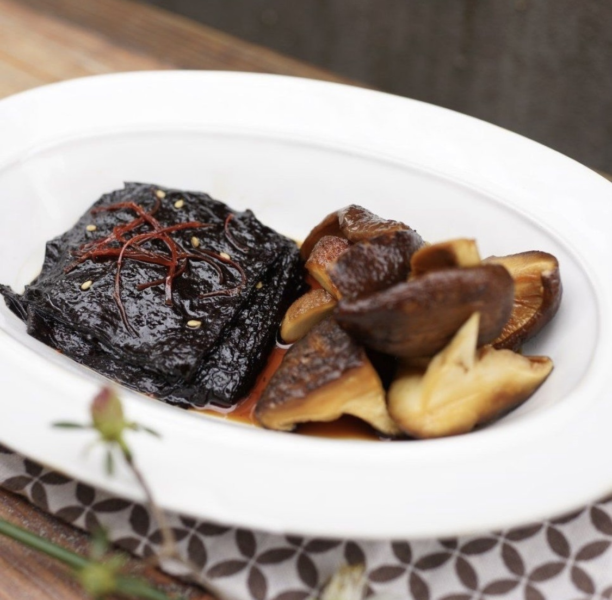
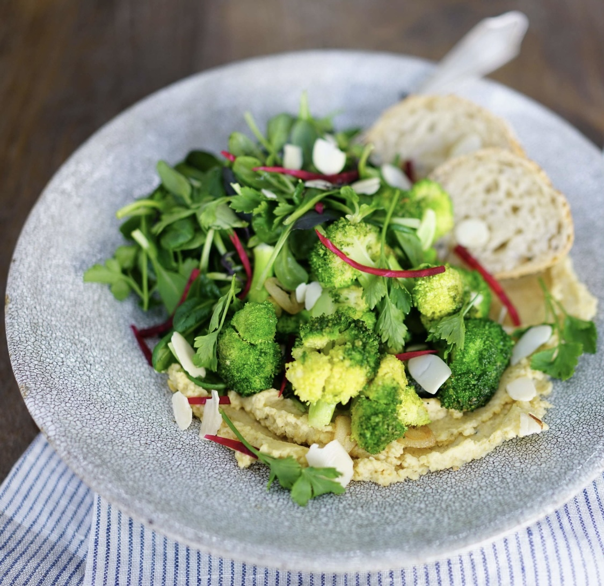
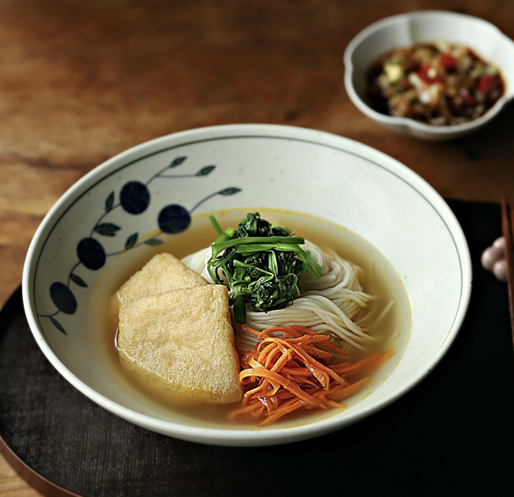
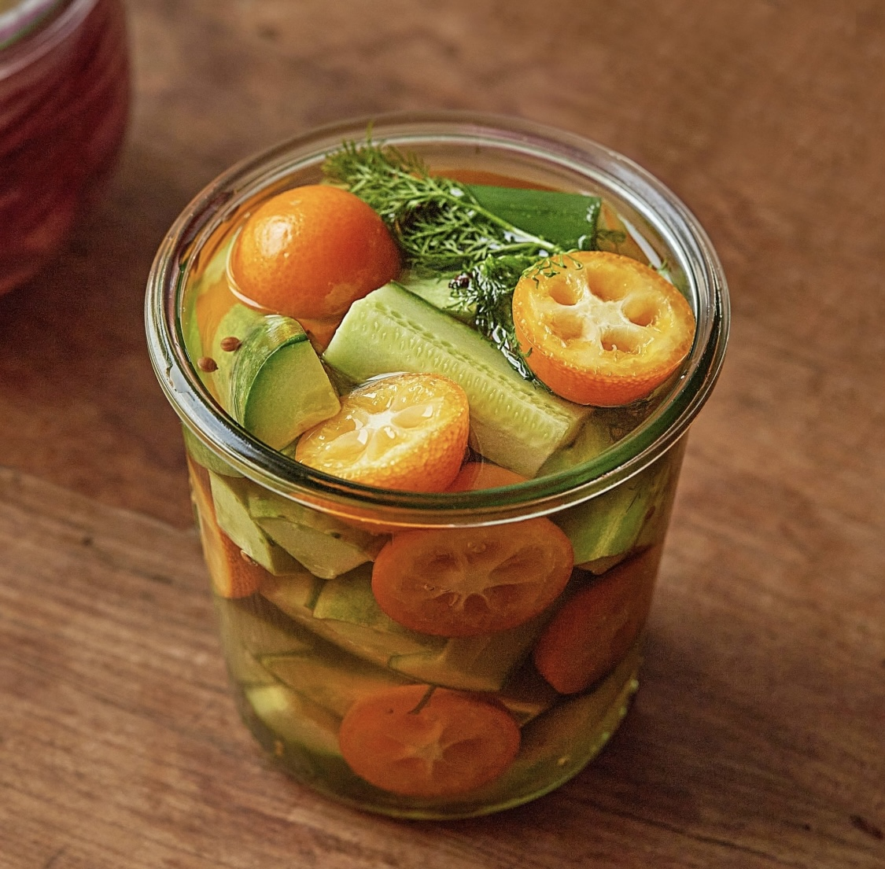
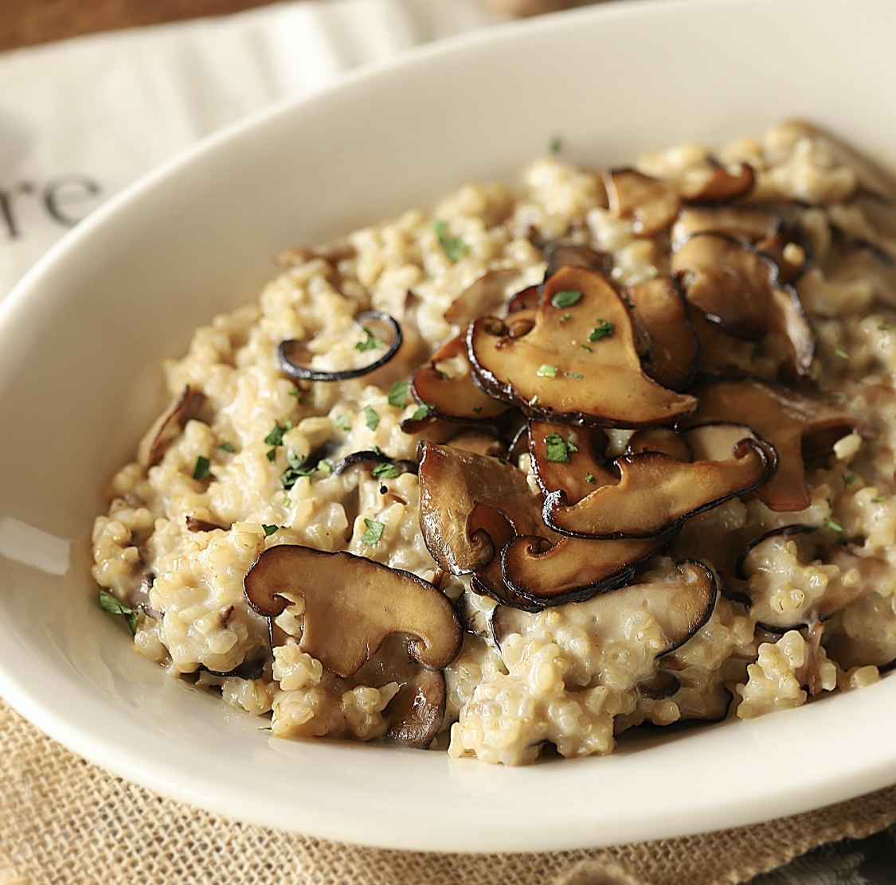

레시피


- 시금치 커리
- 난이도 ★ ★ ☆ ☆ ☆
- 제철 겨울 시금치를 활용하여 만든 비건 커리!
- 
- 김표고장아찌
- 난이도 ★ ★ ★ ☆ ☆
- 밑반찬으로 먹기좋은 색다른 장아찌를 소개합니다.
- 
- 후무스샐러드
- 난이도 ★ ★ ★ ☆ ☆
- 한 끼 식사로도 손색이 없는 든든한 영양 만점 샐러드를 소개합니다.

- 김 두부 덮밥
- 난이도 ★ ★ ☆ ☆ ☆
- 냉장고 속 두부로 만드는 맛있는 한 끼 요리를 알려드려요.

- 가지 갈비
- 난이도 ★ ★ ☆ ☆ ☆
- 갈비보다 더 맛있는 갈비가 나타났어요!
- 
- 유부 잔치국수
- 난이도 ★ ★ ☆ ☆ ☆
- 담백하고 깔끔한 채수로 만든 잔치국수 한그릇!
- 
- 오이 금귤 피클
- 난이도 ★ ★ ★ ☆ ☆
- 아삭한 식감의 오이와 금귤의 달콤하면서도 쌉싸름한 맛이 어우러진 피클을 소개합니다.
- 
- 버섯 리조또
- 난이도 ★ ★ ★ ☆ ☆
- 표고버섯과 현미를 사용해 건강하고 맛있는 버섯 리조또를 소개합니다.